Fabrication · Lesson 03 · FDM & Slicer Mastery
3D Printing
Predict, Slice & Test
Understand every slicer setting, why it matters, and how to choose the right combination for your scenario — from quick prototypes to strong functional parts to ultra-fine display models.
Start here · 35–45 minute investigation
Make a decision you can defend
Your team needs a lightweight prototype before the next class. Can you reduce printing time without losing the features you need? Predict a change, compare two settings, then explain the tradeoff.
- Observe the walls, internal infill, and solid skins in the preview.
- Save a baseline. Change just one setting and compare time and material.
- Explain what this model cannot tell you, then plan a small physical test.
01 — How FDM 3D Printing Works
Plastic, Heat & Layers
FDM (Fused Deposition Modelling) is the most common type of desktop 3D printing. A spool of plastic filament is fed through a heated nozzle called a hotend, which melts it and deposits it in precise paths on a build platform. The nozzle and build platform move apart by one layer height after each layer, and the process repeats until a full 3D object has been built up, one thin slice at a time.
A slicer is the software (Cura, PrusaSlicer, Bambu Studio, OrcaSlicer) that converts your 3D model file (STL/3MF) into the G-code instructions the printer follows. Every setting below lives inside the slicer — understanding them is what separates a print that works from one that fails.
Hotend & Nozzle
tap to revealHotend & Nozzle
The heated nozzle melts filament at 180–300 °C depending on material. Standard nozzles are 0.4 mm brass. Hardened steel nozzles are needed for abrasive filaments like carbon-fibre or glow-in-the-dark.
Heated Bed
tap to revealHeated Bed
The build surface is usually heated (50–110 °C) to prevent warping — when the first layer cools too fast it contracts and peels up. PEI spring-steel sheets, glass, and textured plates are common bed surfaces.
Extruder
tap to revealExtruder
The extruder motor feeds filament into the hotend. A direct drive extruder sits on the printhead (better for flexible filaments). A Bowden extruder sits remotely with a tube (lighter, faster, but worse retraction).
Part Cooling Fan
tap to revealPart Cooling Fan
Plastic must solidify quickly after extrusion to hold fine details and prevent drooping on overhangs. High cooling = sharper details, better overhangs. Too much cooling = layer adhesion problems with some materials (ABS, ASA).
Build Volume
tap to revealBuild Volume
The maximum size a printer can produce, measured in X × Y × Z. A typical desktop printer is 220×220×250 mm. Parts bigger than the build volume must be split and joined with adhesive, screws, or snap-fits.
G-Code
tap to revealG-Code
The raw instruction language sent to the printer: coordinates, speeds, temperatures, fan speeds, retractions. You rarely write it by hand — the slicer generates it — but reading G-code can help debug failed prints.
02 — Interactive Slicer Simulator
Predict → Change One Setting → Compare
These teaching models are 60 mm tall and use 0.4 mm extrusion width, four solid layers at each end, PLA density of 1.24 g/cm³, constant extrusion speed, and assumed travel overhead. It omits acceleration, heating, cooling delays, and actual toolpaths. Time and mass are comparisons, not printer forecasts; strength must be tested.
The classroom SKETCH Large has a 220 × 200 × 250 mm build volume and supports MakerBot PLA and Tough for SKETCH. Controls here explore generic FDM concepts, including support styles that may not exist in the classroom slicer. Use its approved profile for real printing.
Save a baseline, then change one setting.
2D preview ready; loading the 3D renderer.
03 — Settings Deep Dive
What Every Setting Actually Does
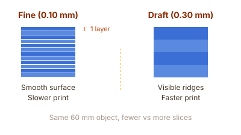
Layer Height
Controls how thick each slice is. Thinner layers (0.05–0.12 mm) = smoother surfaces, finer details, longer print time. Thicker layers (0.24–0.40 mm) = faster prints, more visible ridges; bonding depends on the process. For most prints, 0.2 mm is the best balance. A rule of thumb: layer height should be no more than 75% of the nozzle diameter.
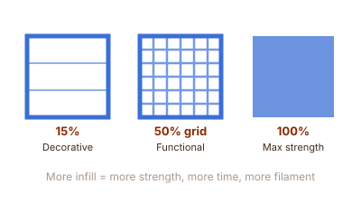
Infill Density & Pattern
Infill is the internal structure that fills the model. 0% = hollow (vases, decorative). 10–20% = light prints, enough for most decorative parts. 40–60% = functional parts with moderate load. 80–100% = more material and time; useful when testing shows a need. Common patterns: Grid, Gyroid (connected 3D structure), Lightning (minimal but fast).
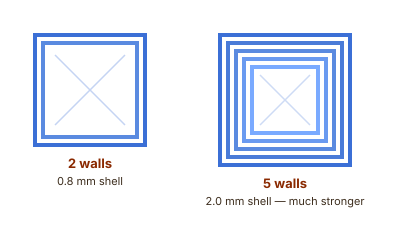
Wall Count (Perimeters)
The number of shells that form the outer surface of the print. 2 walls = fast, thin, fragile. 3–4 walls = standard for functional parts. 5+ walls = very strong, less infill needed, excellent for mechanical parts. Wall thickness = wall count × nozzle diameter (0.4 mm nozzle × 3 walls = 1.2 mm shell).
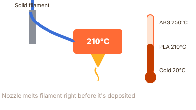
Print Temperature
Higher temperature = better layer adhesion, less risk of clogs, slightly more stringing. Lower temperature = less stringing, better detail on bridges but possible delamination. Always stay within the filament manufacturer's range. PLA: 195–220 °C. PETG: 230–250 °C. ABS: 230–250 °C. TPU: 220–240 °C.
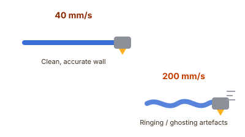
Print Speed
How fast the printhead moves in mm/s. Faster = shorter print time but more vibration artefacts, reduced layer adhesion, and possible missed steps on overhangs. Slower = higher quality. Outer walls are usually printed slower than infill (e.g., infill 80 mm/s, outer walls 40 mm/s). Modern machines with input shaping (Klipper, Bambu) can handle 200–600 mm/s reliably.
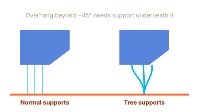
Supports
3D printers can't print in mid-air — overhangs beyond ~45° need supports beneath them. Normal supports grow from the build plate up. Everywhere supports also grow from the model. Tree supports branch from below and use less material. Supports must be removed after printing, so minimise them by rotating the model so overhangs face down or eliminating them through design.
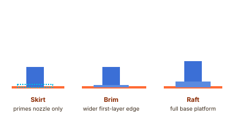
Bed Adhesion
Skirt: a ring around the print to prime the nozzle — no adhesion. Brim: extra lines attached to the first layer edge — great for tall narrow parts. Raft: a full base platform the print sits on — used for very warpy materials (ABS, ASA) or complex first-layer geometries. Most PLA prints need only a skirt or no adhesion aid.
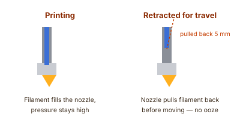
Retraction
When the nozzle travels over empty space, it pulls the filament back slightly to prevent stringing. Direct drive: 0.5–2 mm retraction. Bowden: 4–7 mm. Too much retraction can grind or jam the filament; too little leaves threads between parts. Higher temperature = worse stringing = needs more retraction.
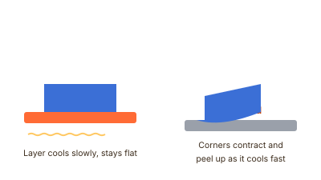
Bed Temperature
Keeps the first layer warm to prevent warping. PLA: 55–65 °C. PETG: 70–85 °C. ABS/ASA: 90–110 °C (needs enclosure). TPU: 40–60 °C. No heated bed = PLA only and small prints. Mismatched bed temp is the #1 cause of prints popping off mid-print.
04 — The Rules for a Perfect Print
12 Golden Rules Every Maker Follows
First layer = everything
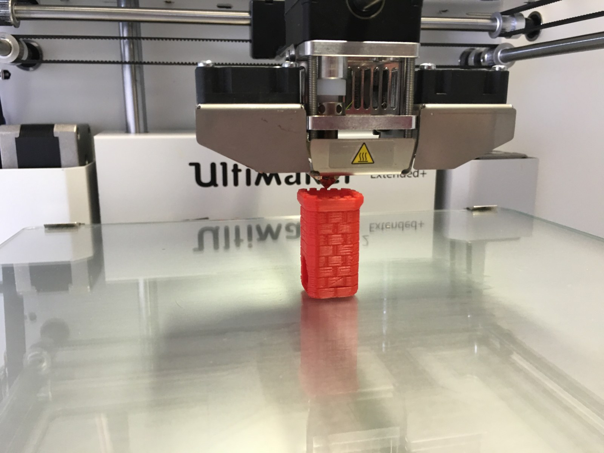
Level the bed, dial Z-offset so filament squishes slightly, and use a clean PEI or glass surface. A sound first layer reduces detachment risk; it does not prevent every failure.
Dry your filament
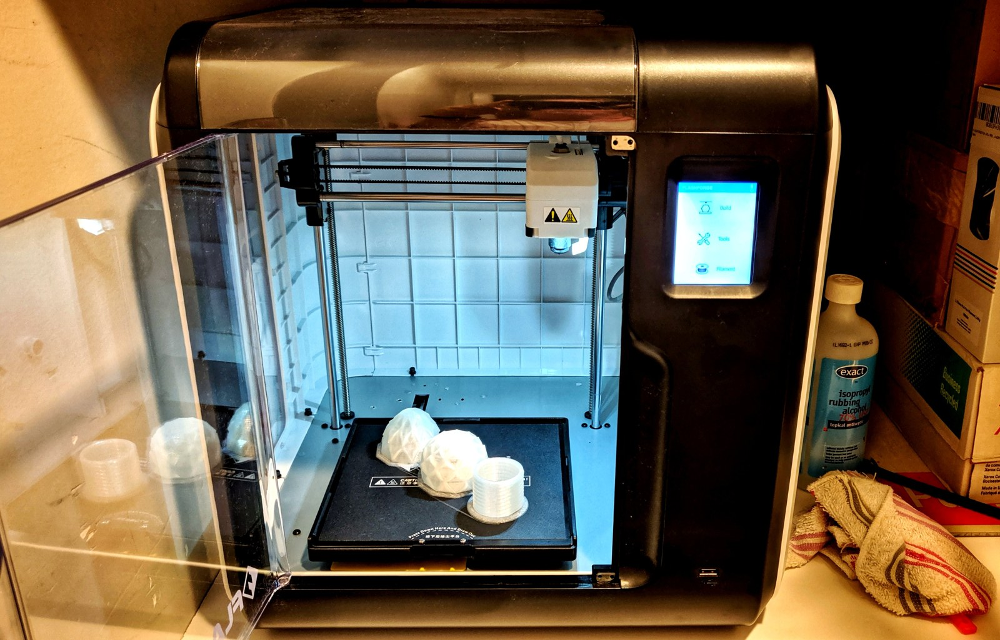
Wet filament pops, bubbles, and strings. Store in sealed containers with silica gel. Moisture sensitivity varies by filament. Follow the filament manufacturer’s drying temperature and time, using approved equipment.
Orient for strength
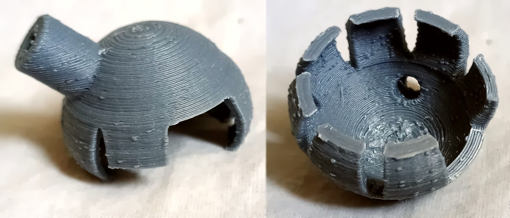
FDM parts are weakest in the Z direction. Orient models so load runs along the XY layer plane. A rod loaded in tension along its length often benefits from lying flat; test your intended load.
Rotate before adding supports
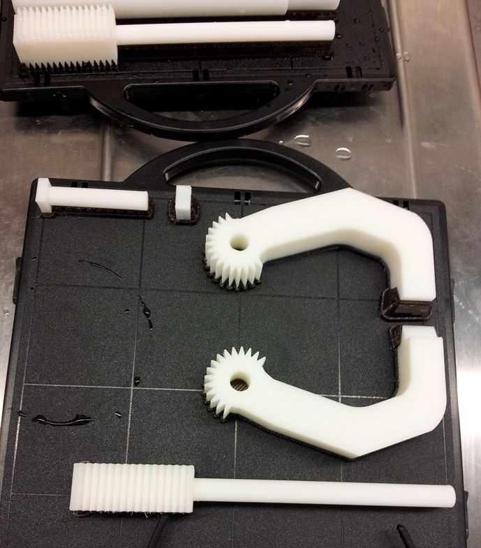
A 90° rotation can convert a complex overhang into a flat surface, eliminating supports entirely — which saves time and leaves a cleaner finish.
Calibrate before you create
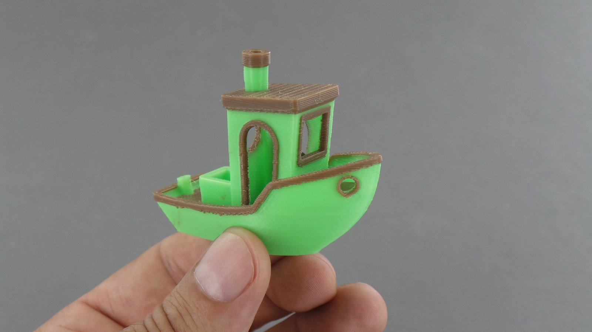
Run a temperature tower, retraction test, and flow calibration on every new spool. 20 minutes of calibration saves hours of wasted prints on long jobs.
Walls beat infill for strength
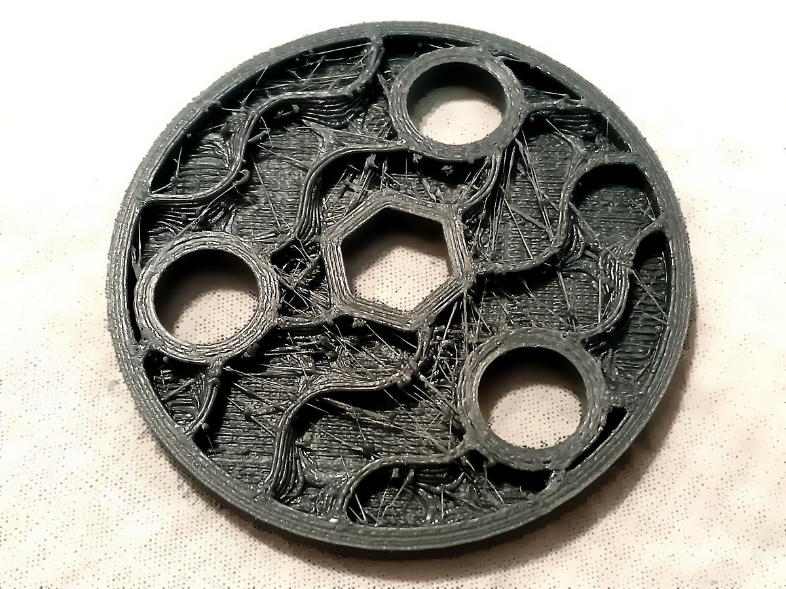
Extra wall perimeters increase part strength more efficiently than raising infill density. Compare walls and infill with a test piece loaded in the intended direction.
Test bridges before committing
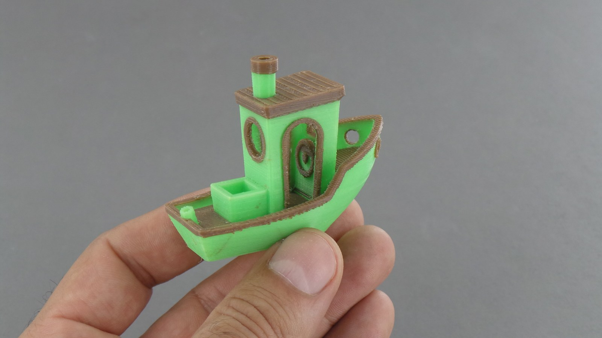
Bridge capability varies with material, geometry, cooling, and speed. Use a short test before choosing supports or redesigning. Print a bridge test before your final print.
Change one variable at a time
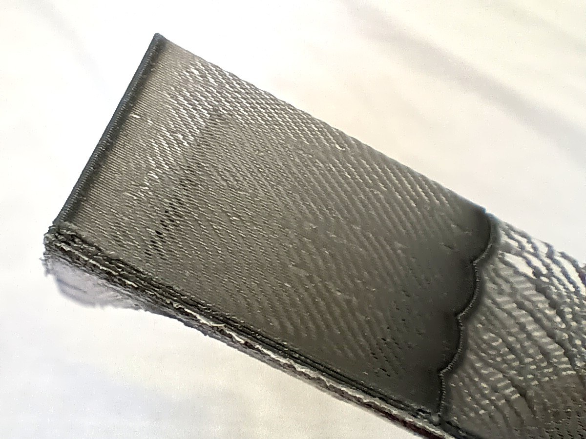
When debugging, only change one setting per test print. Changing temperature, speed, and retraction simultaneously makes it impossible to know what actually fixed it.
Watch the first 3 layers live
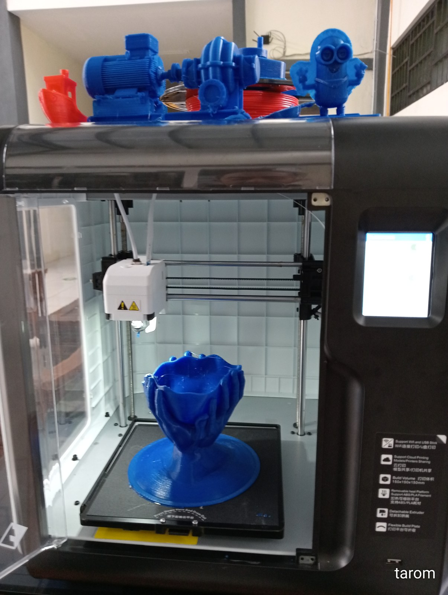
Stay at the printer for the first 3 layers. If you see lifting, stringing, or the nozzle gouging the bed, stop immediately. Failures caught early cost minutes; left alone they cost hours.
Design for the process
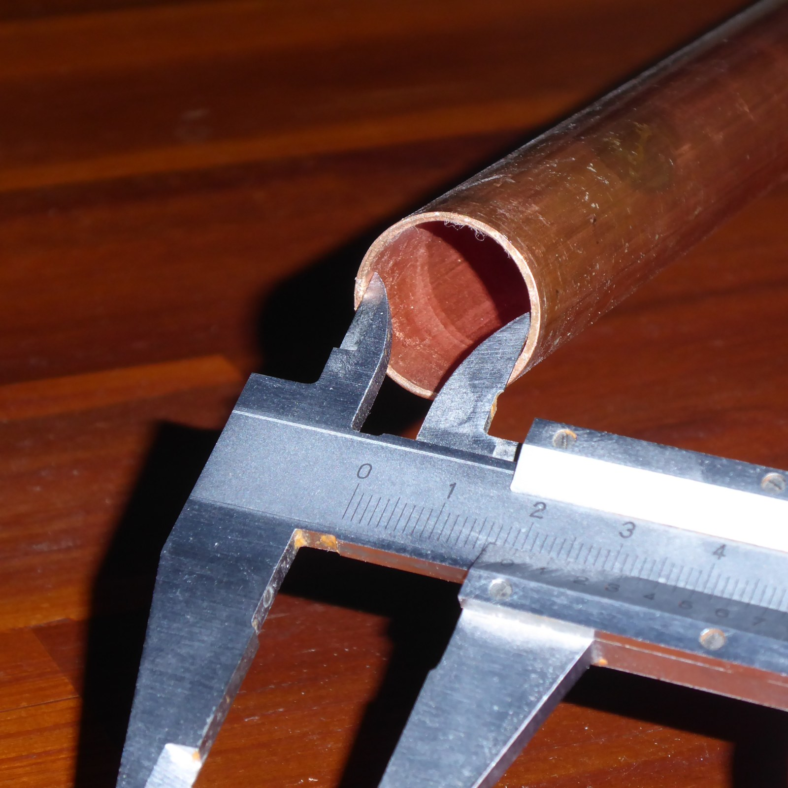
Start with 1.2 mm walls for this 0.4 mm example. Small holes and mating parts need a fit coupon; try 0.2 mm clearance, then measure and adjust. Chamfer or fillet edges to reduce stress concentration at layer lines.
Post-process when it matters
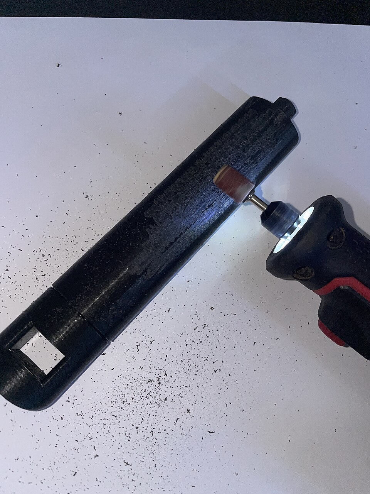
Sand through 120→220→400 grit, prime, then paint. Heat treatment can distort parts. Solvents and coatings require separate trained-adult procedures; use teacher-approved finishing only.
Save every slicer profile
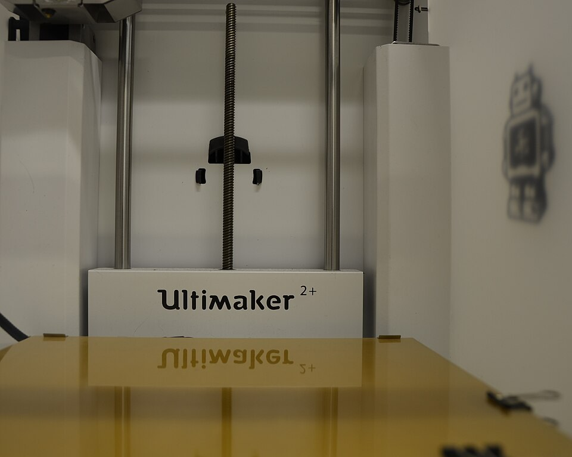
Label profiles clearly — e.g. "PLA Draft 0.3 mm Bambu P1S" or "PETG Functional 0.2 mm Fine". Slicer settings are too nuanced to recreate from memory.
05 — Print Scenario Guide
What Settings Fit Your Situation?
Select a scenario — the settings table updates instantly, showing recommended values and the reasoning behind each choice.
🚀 Quick Prototype Settings
| Setting | Value | Why |
|---|---|---|
| Layer Height | 0.30–0.40 mm | Maximum speed; surface quality doesn't matter yet |
| Infill | 10–15% | Just enough to hold the shell together; saves time |
| Walls | 2 | Minimum walls — fit testing only |
| Print Speed | 80–150 mm/s | Fast; banding and artefacts acceptable |
| Supports | None or minimal | Speed — accept some overhang sag for prototyping |
| Material | PLA | Easiest, no enclosure, fast cool-down |
| Top/Bottom Layers | 2 | Reduces time; appearance unimportant |
🏆 Display / Figurine Settings
| Setting | Value | Why |
|---|---|---|
| Layer Height | 0.08–0.12 mm | Ultra-fine layers = near-smooth surface; less sanding needed |
| Infill | 15% | Display parts aren't load-bearing; save weight & time |
| Walls | 4–5 | Thick shell prevents infill pattern telegraphing to surface |
| Print Speed | 30–50 mm/s | Slow = minimal vibration artefacts on outer walls |
| Cooling | 100% | Maximum cooling snaps layers sharp for fine detail |
| Supports | Tree (everywhere) | Tree supports leave smaller contact marks than normal supports |
| Material | PLA or Silk PLA | Easy to sand, prime, and paint; Silk PLA has a metallic sheen |
🔩 Functional / Mechanical Part Settings
| Setting | Value | Why |
|---|---|---|
| Layer Height | 0.20 mm | Good layer adhesion without excessive print time |
| Infill | 40–60% | Enough internal material to resist compression and impact |
| Walls | 5–8 | Extra walls can help; test the intended load and orientation |
| Infill Pattern | Gyroid or Cubic | Isotropic strength — resists load equally from all directions |
| Print Speed | 40–60 mm/s | Moderate speed maintains strong layer-to-layer bonding |
| Top/Bottom Layers | 5–6 | Thick top/bottom caps prevent surface flexing under load |
| Material | PETG or ABS | Better heat resistance and impact strength than PLA |
🧤 Flexible / Wearable Settings
| Setting | Value | Why |
|---|---|---|
| Material | TPU 95A or 87A | Shore A = hardness rating; lower number = softer/more elastic |
| Layer Height | 0.20–0.28 mm | Thicker layers bond better in flexible materials |
| Infill | 20–35% | Too much infill makes the part stiff — tune to the flex level required |
| Print Speed | 20–35 mm/s | TPU buckles and jams if printed fast — go slow |
| Retraction | 0–2 mm | Minimal retraction only — TPU buckles in Bowden tubes |
| Walls | 3–4 | Enough shell to maintain shape while still allowing flex |
| Cooling | 50–70% | Too much cooling causes TPU to delaminate between layers |
☀️ Outdoor / UV-Exposed Settings
| Setting | Value | Why |
|---|---|---|
| Material | ASA or PETG | ASA = UV stable + weather resistant. PETG = moisture resistant. Outdoor life depends on the specific formulation, heat, and exposure. |
| Layer Height | 0.20 mm | Standard balance; outdoor parts prioritise strength over fine detail |
| Infill | 30–50% | Outdoor parts may face wind, impact, or load-bearing use |
| Walls | 4–5 | Thick walls reduce moisture ingress and improve UV resistance |
| Bed Temp | 90–110 °C | ASA needs high bed temp plus an enclosure to prevent warping |
| Enclosure | Required for ASA | ASA warps aggressively in open-air with any temperature draft |
| Post-Process | UV-resistant clear coat | Even ASA benefits from a UV-stabilised top coat for extended outdoor life |
🏺 Vase / Hollow Container Settings
| Setting | Value | Why |
|---|---|---|
| Mode | Spiralise / Vase Mode | One continuous spiral path — reduces repeated layer seams; thin walls and watertightness need testing |
| Layer Height | 0.15–0.25 mm | Thinner layers = smoother; the spiral amplifies any layer-line texture |
| Wall Width | 0.6–1.2 mm | Wider than normal — single-wall prints need more width for strength |
| Bottom Layers | 3–5 solid layers | Solid base before the spiral begins so the vase can hold contents |
| Speed | 40–60 mm/s | Consistent extrusion rate prevents thin/thick banding in the spiral |
| Material | PLA or Silk PLA | Silk PLA in Vase Mode catches light with a spectacular metallic sheen |
| Supports | None needed | Vase mode prints the full outer contour — supports are never required |
06 — Materials Reference
Choosing the Right Filament
The material is the most important decision — it determines strength, flexibility, heat resistance, ease of printing, and whether you need an enclosure. Start with PLA; graduate to PETG for functional parts.
| Material | Nozzle °C | Bed °C | Enclosure | Strengths | Weaknesses | Difficulty |
|---|---|---|---|---|---|---|
| PLA | 195–220 | 55–65 | No | Easy, sharp details, biodegradable, low warp, cheap | Brittle at impact, low heat resistance (~60 °C), UV-degrades | Beginner |
| PETG | 230–250 | 70–85 | No | Strong, flexible, food-safe grades, good layer adhesion | Strings badly, absorbs moisture, slightly tricky bed adhesion | Intermediate |
| ABS | 230–250 | 100–110 | Yes | Tough, acetone-smoothable, heat resistant (~100 °C), widely used industrially | Warps aggressively, fumes require ventilation, hard to print | Advanced |
| ASA | 240–260 | 90–110 | Yes | UV stable, weather resistant, similar toughness to ABS | Warps, requires enclosure, fumes, more expensive than ABS | Advanced |
| TPU | 220–240 | 40–60 | No | Flexible, durable, impact-resistant, wearable | Slow print speed needed, Bowden extruder problems, strings | Intermediate |
| Nylon (PA) | 250–270 | 70–90 | Recommended | High strength, fatigue-resistant, slightly flexible | Highly hygroscopic (must be dry), warps, expensive | Advanced |
| Resin (MSLA) | N/A | N/A | Ventilation | Incredible detail (0.01 mm), smooth surfaces, rigid | Toxic uncured, brittle, small build volume, post-wash needed | Advanced |
07 — Troubleshooting Common Failures
What Went Wrong & How to Fix It
Each card shows the visual signature of the failure, its root cause, and the slicer or hardware fix. When you encounter a bad print, match it to a card.
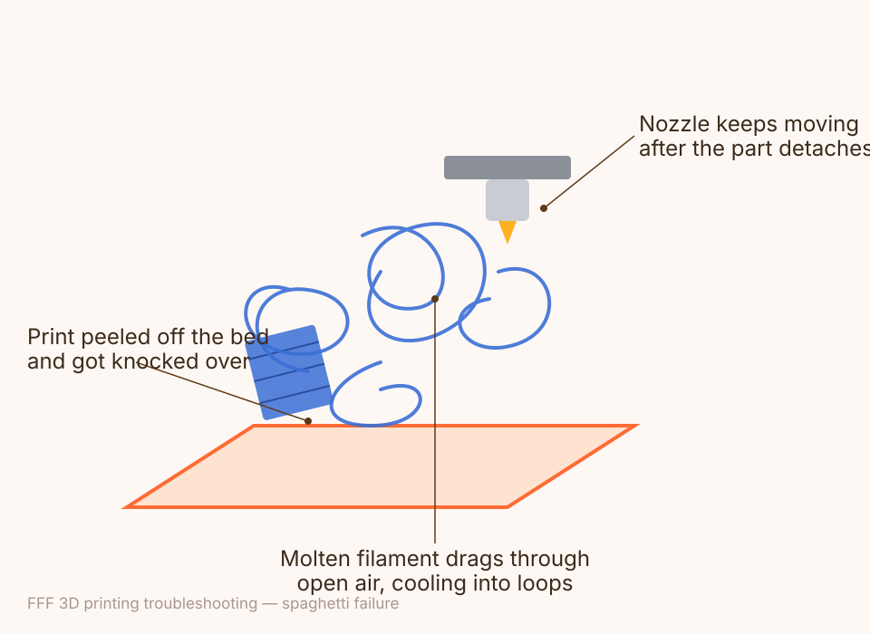
from a detached print
Spaghetti / Knocking
Print detached from the bed mid-print. The nozzle knocks over the loose part and drags molten filament through the air in loops, building a bird's-nest of plastic.
Increase bed adhesion (brim, higher bed temp, glue stick). Re-level the bed. Reduce first-layer speed to 20–30 mm/s. Clean the bed surface with isopropyl alcohol before every print.
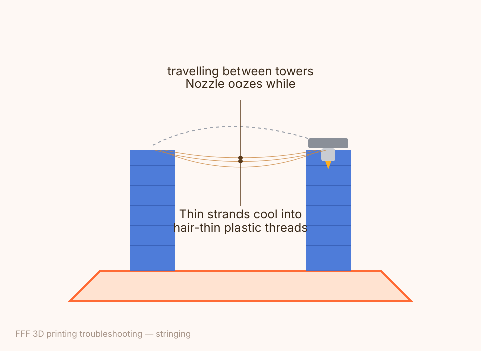
spanning open gaps
Stringing / Cobwebs
Molten plastic oozes from the nozzle during travel moves across open air. This leaves hair-thin threads connecting separate parts of the print.
Increase retraction distance/speed. Reduce nozzle temperature by 5 °C. Enable combing (travel inside the model). Dry the filament — moisture dramatically increases stringing.
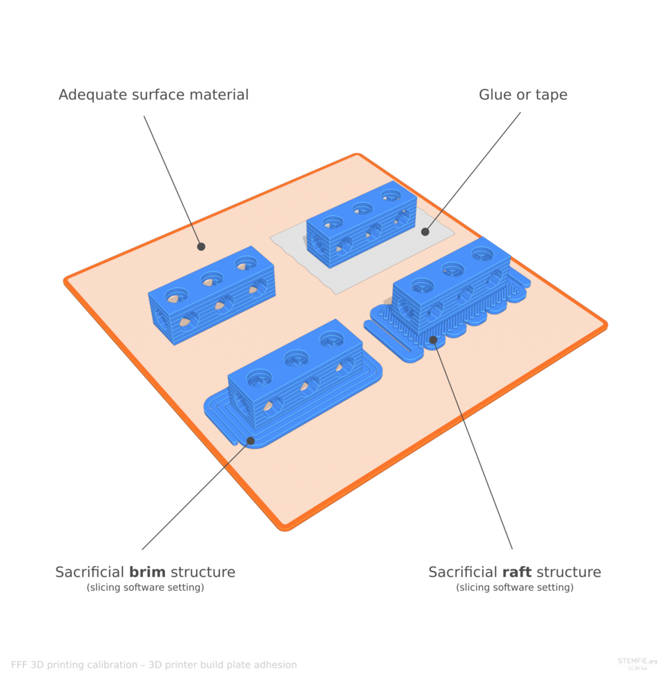
up off the print bed
Warping / Lifting Corners
Thermal contraction as the part cools unevenly causes the base to peel off the bed. Worst on ABS, ASA, and large flat parts with no brim.
Raise bed temperature. Add a wide brim. Use an enclosure (critical for ABS/ASA). Apply Magigoo, glue stick, or hairspray to the bed. Remove draughts near the printer.
Diagram: STEMFIE.org, CC BY-SA 4.0

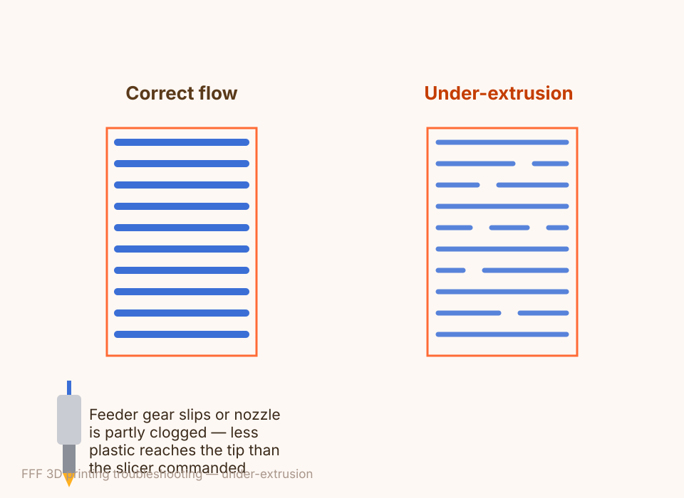
and missing wall segments
Under-Extrusion / Gaps
Insufficient filament reaching the nozzle — partial clog, feeder gear slipping, or flow rate set too low. Results in gaps, weak walls, and holey top surfaces.
Increase flow rate by 5–10%. Clean or replace the nozzle. Check feeder gear tension and look for filament grinding marks. Raise nozzle temperature by 5 °C.
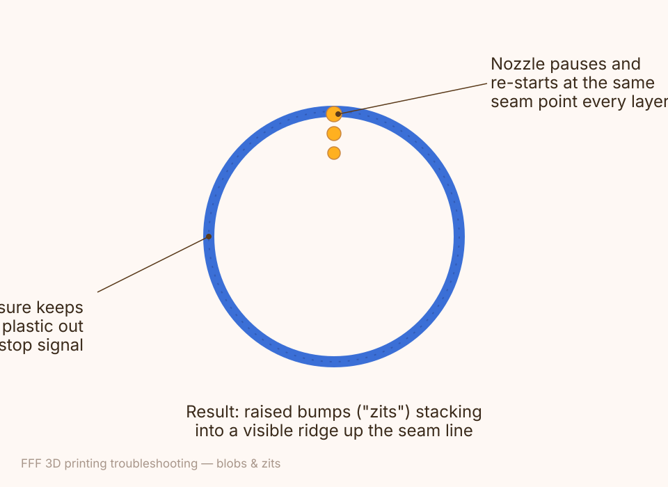
at layer seam points
Blobs / Zits on Surface
Extra material oozes at perimeter start/end points when the nozzle briefly pauses. Caused by excess pressure in the hotend, especially with fast outer walls.
Enable seam hiding (random or aligned). Tune pressure advance (Klipper) or linear advance (Marlin). Reduce outer wall speed. Lower nozzle temperature slightly.
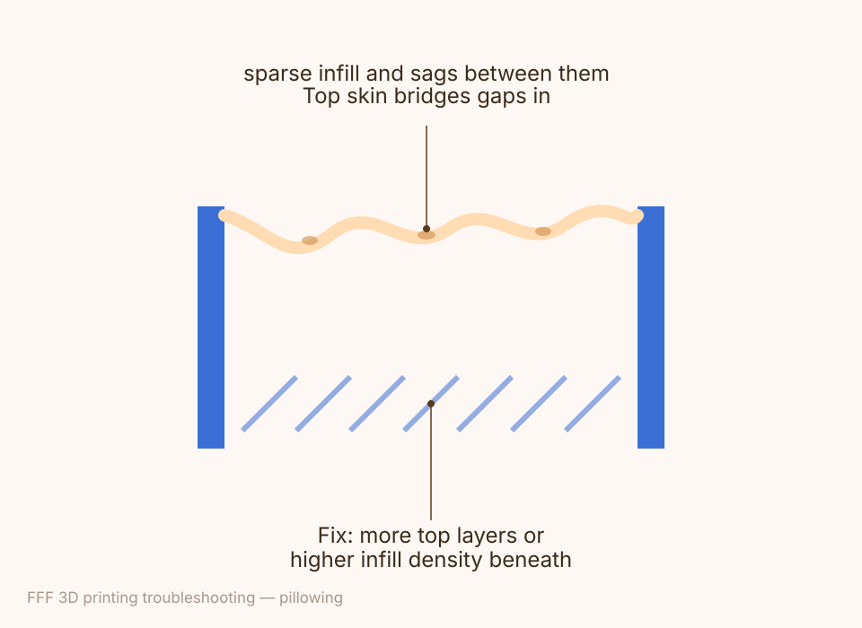
with infill holes showing through
Poor Top Surface / Pillowing
Too few top layers bridging over the infill gaps, or infill density too low to support the top skin, causes the surface to sag, bubble, or leave holes.
Increase top layers to a minimum of 4–6. Raise infill to at least 20% for enclosed tops. Enable "ironing" for an ultra-smooth top surface. Increase cooling on the top layers.
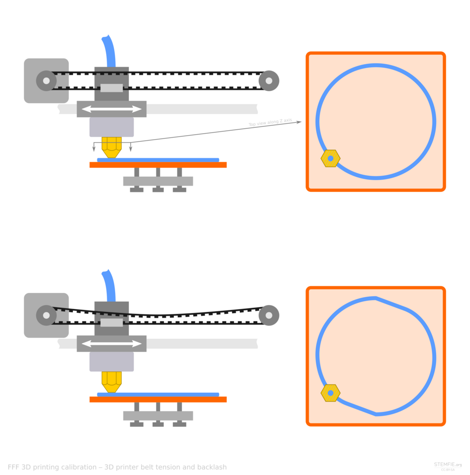
ripple lines on the wall surface
Layer Lines / Banding
Repeating horizontal ridges caused by frame vibration at speed, Z-wobble from a bent lead screw, or inconsistent extrusion from a worn feeder gear.
Tighten XY belts. Enable input shaping (Klipper) or reduce speed. Check and replace a bent lead screw or Z-coupling. Inspect the feeder gear for wear and grinding.
Diagram: STEMFIE.org, CC BY-SA 4.0

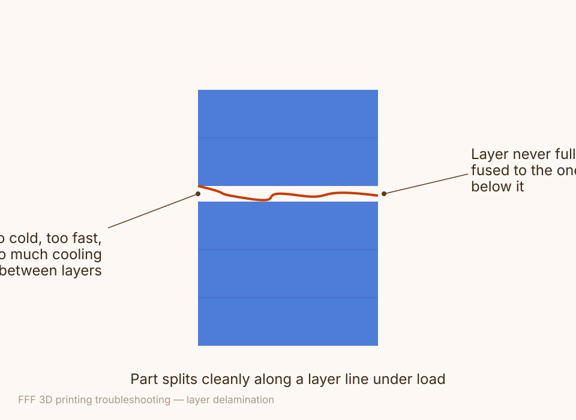
or split between layer lines
Layer Delamination / Splitting
Layers fail to fuse together — temperature too low to melt properly into the previous layer, speed too high for the material to bond, or excessive cooling on ABS/ASA.
Raise nozzle temperature by 5–10 °C. Reduce part cooling fan to 30–50% for ABS/ASA. Lower print speed. Dry the filament — moisture prevents proper layer fusion.
08 — Check Your Understanding
Quick Quiz
1. Using this lesson’s conservative 75% guideline, what layer height corresponds to a 0.4 mm nozzle?
2. Which method is generally MORE effective at increasing part strength?
3. Why does FDM print TPU slowly (20–35 mm/s)?
4. What causes stringing between printed parts?
5. Which material should you use for an outdoor part that must resist UV and rain?
Exit ticket: evidence before a full print
Report your baseline, one changed setting, and the measured model difference. Which feature of your prototype could suffer? Describe a small test print, the load or fit you would test, and what result would convince you to keep the change.
Sources and model limits
Prusa: layers and perimeters explains layer-height limits and the role of walls. Its roughly 80% ceiling differs from the conservative 75% guideline used here. Actual extrusion width can differ from nozzle diameter.
MakerBot: SKETCH Large specifications supports the build volume, nozzle, and classroom materials listed here. Generic scenario temperatures are starting examples, not SKETCH profiles.
NIOSH: safe 3D printing for schools and makerspaces covers emission controls and operating practices.
The 3D preview samples at most 120 layer bands for clarity and uses schematic alternating infill paths. Supports are hypothetical examples beside the box, not generated toolpaths. The straight box and gradual-overhang examples have no generated external supports. The ledge and bridge examples place schematic support paths beneath their elevated surfaces; this is not an automatic support solver. Support estimates assume 20% volume for linear styles and 8% for tree styles. All support footprints reach the bed, so “everywhere” matches “normal” in these examples. Four top/bottom layers mean skin thickness changes with layer height. The surface indicator describes layer fineness only; it cannot predict strength, accuracy, or successful printing.
09 — Design & Print in the Classroom
Ready to Build? Design Parametric Parts in Forge
Put the golden rules to work with Forge — ClassroomOS’s parametric 3D CAD tool. Design electronics cases, spiral fidgets, gear pairs, and custom clips with real-time design-rule checks for nozzle walls, bridges, overhang angles, and bed fit, then download clean STLs ready for MakerBot Print.